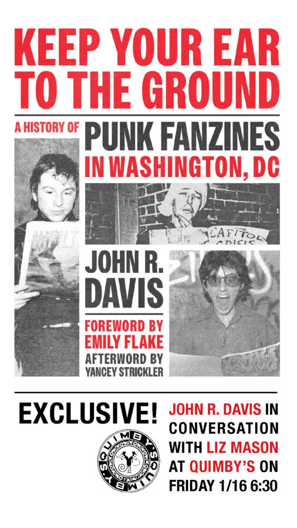

Keep Your Ear to the Ground: A History of DC Punk Fanzines John Davis in Conversation with Liz Mason
Keep Your Ear to the Ground: A History of DC Punk Fanzines John Davis in Conversation with Liz Mason Friday, January 16th, 2026 – 6:30-8:30
Keep Your Ear to the Ground is the first history of the fanzines that emerged from Washington, DC’s highly influential punk community.
DIY culture has always been at the heart of DC’s thriving punk community. As Washington, DC’s punk scene emerged in the mid-1970s, so did the “fanzines” that celebrated it. Before the rise of the internet, fanzines were a potent way for fans to communicate and to revel in the joy of fandom. More than just publications, they were a distillation of punk’s allure, connecting the city to the broader punk community. Fanzines remain a meaningful, tactile, creative medium for punk fans to connect with like-minded people outside the corporate-controlled world.
In Keep Your Ear to the Ground, the archivist and musician John R. Davis unveils the development of punk fanzines and their role in supporting DC’s hardcore and punk scene from the 1970s into the twenty-first century. He sheds new light on DC’s scene and highlights some of its key personalities, including many who are often left out of punk history, with high-quality images of rare zines and insights from numerous interviews with zine creators and musicians. This book vividly weaves together the origin of zines and their importance in underground communities.
For punk enthusiasts, zine creators, American studies scholars, and anyone who has ever felt like an outsider, Keep Your Ear to the Ground traces how the unique environment of Washington, DC, helped zines thrive. –.- ..- .. — -… -.– .—-. …
John R. Davis is the curator of Special Collections in Performing Arts at the University of Maryland’s Michelle Smith Performing Arts Library. His articles and commentary appear in the Washington Post, NPR, Notes: The Journal of the Music Library Association, The Journal of Popular Culture, and Post & Post-Punk. He is a longtime participant in the Washington, D.C. punk community as a fanzine creator and as a musician in bands like Q And Not U, Georgie James, Corm, and Title Tracks.
John will be in conversation with Quimby’s Dean Emeritus Liz Mason. Liz has been self-publishing zines for almost three decades. Recent works include Caboose #15 I Was There, Awesome Things #4, Cul-de-sac #9 and The Most Unwanted Zine. Her work has also been published in such publications as The Chicago Tribune, Broken Pencil, Punk Planet, The Zine Yearbook, Third Coast Review, and more. She managed Quimby’s Bookstore, home of wild and weird reading material in Chicago, for two and a half decades.
In January 2025, she enrolled in the Master of Science in Library & Information Science program with a specialization in Archives and Records Management at Chicago State University. Catch her on 107.1 FM CHIRP Radio in Chicago, Wednesday mornings 6-9 AM CT, or co-hosting the podcast Rough Draft with Keidra and Liz. –.- ..- .. — -… -.– .—-. …